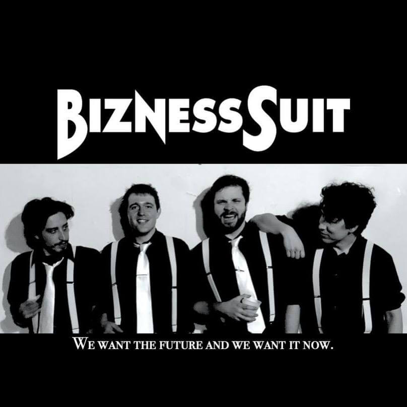

Before taking the step into his solo career, Moss has been a prolific songwriter and guitarist in other groups. Most notably of these groups is Pluff Mud Queen and Bizness Suit.
Pluff Mud Queen
Pluff Mud Queen was founded by Moss (guitar lead vocals) in 2013 with members Stefan Williams (bassist, vocals), and Cameron Ballinger (drums) the band released it's first EP in 2015 titled "Sweet Action". In 2017, with drummer Cre Moore replacing Ballinger, the band released it's first full length album titled "Salty Lips". Boths records were recorded and produced by Moss and Williams.
Hunter Moss (Left) with current Pluff Mud Queen lineup, Jeremy Hunton (center) and Stefan Williams (right)
Bizness Suit
From left to right, Drew Tapp, Hunter Moss, Jeremy Hunton, and Sean Barry of Bizness Suit
Bizness Suit was founded in 2014 by founding members Sean Barry (guitar/vocals), Drew Tapp (bass), and Jeremy Hunton (drums/vocals). The band gained a large enough following in 2015 that they were able to fund a Kickstarter campaign to travel out to Los Angeles to work with producer Martin Guigui at Lion Share Studios. At Lion Share, the trio recorded their debut album, "Grey Sky Blues". While working on the record, Guigui was able to connect the band with rock legend Billy Gibbons of ZZ Top, who recorded a solo on the band's album single, "Rock N' Rolla".
In 2017 during the band's album release, the band requested Hunter Moss fill in for the "Gibbons' Solo" for the last song of the show. The song went over so well, the band requested Moss join the group shortly after. With the addition of Moss, the band enjoyed local and regional success; touring throughout the Southeast. Eventually in 2018, the band tracked and recorded their 2nd album, "King", with Moss directing the recording, mixing and mastering of the record. Currently, the band is working on it's third studio album scheduled for release in late 2021.